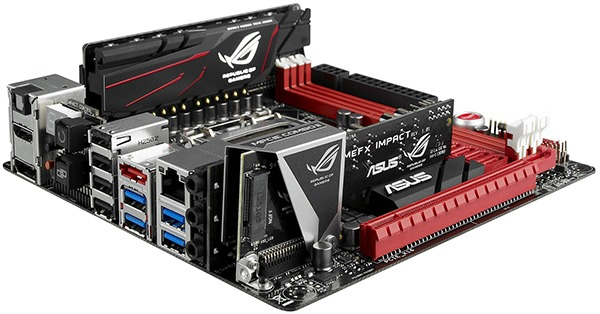

Mini-ITX - Un formato di scheda madre molto piccolo ad alta integrazione, introdotto da VIA e pensato per thin client, chioschi elettronici e set-top box. Mini-ITX è un formato di scheda madre a basso consumo di 17 x 17 cm a sviluppato da VIA technologies. La scheda Mini-ITX è leggermente più piccola della scheda MicroATX e spesso è raffreddata passivamente (senza ventole) grazie ai bassi consumi, della scheda e del processore utilizzato. Questo la rende appetibile per sistemi home theather, o dovunque i bassi consumi e la silenziosità siano importanti. ramai questo formato di schede è diventato uno standard, infatti la scelta è già molto ampia. Attualmente il mercato offre molte schede che supportano i processori delle maggiori case: VIA, Intel e AMD.